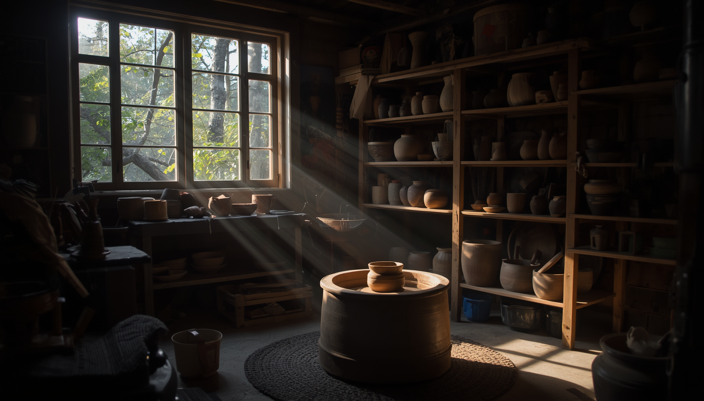
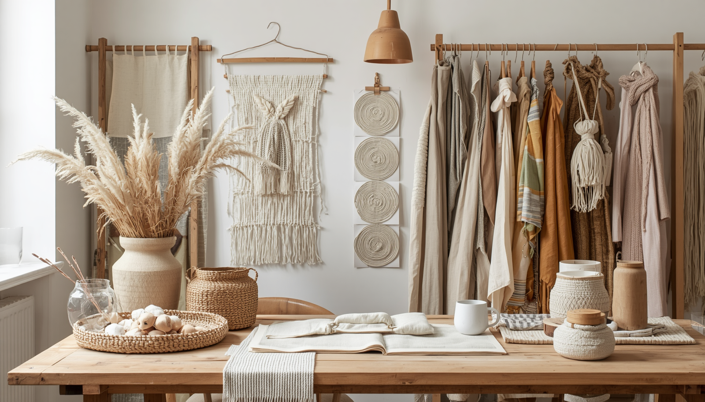

La feria artesanal que transforma el oficio local
Cuatro espacios, dos salas de taller y una plaza para el mercado: un fin de semana para recuperarnos creativamente.

Durante dos jornadas, el casco antiguo se convierte en un laboratorio abierto donde los visitantes pueden entrar en contacto con procesos constructivos y materiales locales.
El primer bloque de actividades estará dedicado a la formación: talleres prácticos en cerámica, diseño textil y carpintería ligera, impartidos por artesanos con presencia national y regional.
“La artesanía contemporánea no es sólo tradición, es la oportunidad de repensar el futuro con manos y sensibilidad.”
El segundo bloque ofrece charlas y testimonios donde se abordará el reto de la sostenibilidad en el oficio, la recuperación de técnicas y la economía circular aplicada a los productos hechos a mano.

Además, el mercado de productores reunirá a más de 20 creadores locales para mostrar piezas de joyería, cerámica, tejido y diseño gráfico artesanal.
Actividades destacadas
- Workshop intensivo de esmaltes vegetales.
- Panel sobre moda ética y producción local.
- Exhibición de piezas colaborativas entre artistas.
La experiencia está pensada para públicos adultos y jóvenes, con entradas abiertas y tarifas reducidas para estudiantes y colectivos culturales.